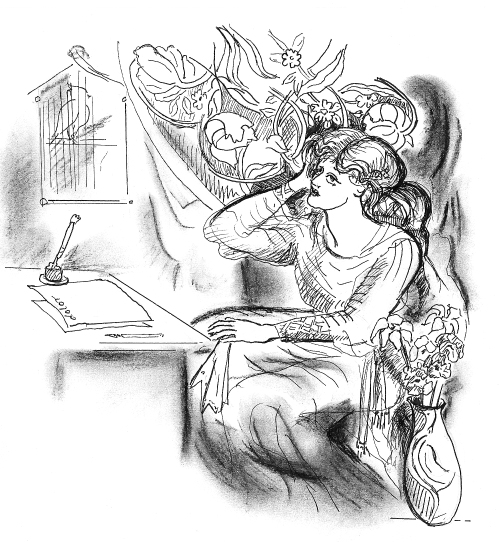

My Friend and Mentor, Maz I have a copy of an article published in the Bournemouth Echo on Friday 2 October, 2009. The heading reads: “Reclusive poet built worldwide following”.
I am still astonished when I look at the photograph of someone called “Poole poet Margaret Griffiths”. Can that be my dear Internet friend Maz with whom I exchanged poems and confidences and jokes? I think the photograph was for a driver’s licence. This beautiful woman with dark luxuriant hair is not a bit like the Maz I thought I knew. My Maz had a pudding-basin, no-nonsense haircut and sensible shoes. But both Mazes have irrepressible mischief and a way of looking at you that denies any sort of deception.
I became more aware of the fluidity and richness of Maz’s writing in 2006 when I was asked to illustrate her beautiful and satirical poem “A Sort of Ode to the Poem Lady (or You Don’t Have To Be a Hypochondriac, But It Helps)”.
I thought she was laughing at me since I have been known to indulge in the odd ecstatic bout, but I now think she was also laughing at herself and at the entire idea that poetry should be restricted to the transcendental plane. But most importantly, she was mocking her own pain and fear. When I read the poem now it breaks my heart. Why didn’t I understand when I drew that pretentious Pre-Raphaelite prima donna? But then, Maz wanted to create that monster which so cruelly satirised her own despair.

… From a world she is too fragile to consume,
she retreats into consumptive dreams, floating off
to seek death like Elaine on a tapestried barge.
Taken by the current, she sings of suicide and pain.
O Poem Lady, may we be forgiven if we hymn life
instead of celebrating the sickroom. O, help us
to wallow in unease and depression and shadows
as we should. For ever and ever, lest Poetry die.
There was always a puritanical streak in Maz. Not that she was against laughter and enjoyment, but she was impatient of sentimentality and self-deception.
In her poem “Booby Trap” she vividly evokes the post-traumatic stress of a soldier who in later civilian life relives his worst horror every time an express train rushes through the station. She uses rhyme and meter, not to make music, but to drive the message home. It is in the spirit of Thomas Hardy at his harshest and best.
Booby Trap
One day retreats from him in passing years
but still returns as loud as the express
exploding through the station now. It clears
the platform, thunders through. Its scream grows less
and less, it draws away like one past day
returning through the years. He won’t confess
that still he hears and smells the blast, the way
his clothes clung to his flesh, his battledress
meat-stained, smeared camouflage, the blooded cloth
spew-warm and wet. Shreds dried on him, no time
to waste, to wash, he had to shift, move off
across the tangled land, with that brown slime
across his chest, to save his men, forget
his friend, and later, hose him off. No sweat.
But she could be funny and frivolous as in these little gems:
The Drowning Gypsy
Flamboyant
Clairvoyant
Unbuo
———–o
———–o
———–o
———–o
———–y
———–a
———–n
———–t
Walking Canford Heath
I am writing this with gritted teeth
and hope I don’t sound bitter,
but I’d like to see more blasted heath
and far less blasted litter.
Maz wrote to me that she was unable to keep any food down and that she was in pain. She didn’t ask for sympathy. She was simply reporting her condition. In the same email she enquired after my own health. She next sent me emails asking for photographs of coloured Australian birds. I desperately wanted to be able to send her such photos. Anyone who has tried to photograph coloured birds against a bright sky will know that the birds usually appear as silhouettes. I managed to find a few photos of the sort of thing her spirit needed. I started to suspect that her health problems were more serious. She seemed to need some life affirming images. Then I didn’t hear any more from Maz. And then, the Internet poets who valued Maz all heard the unbelievable news. We had to live in a world without Maz. Unthinkable. I have so much more I want to discuss with Maz. I need her opinion and above all I need the poems.
But wait, I do have her opinions. I can guess her reponses to my questions because she still lives inside my head. And, thank the lord, we have a tumultuous collection of the poems of Margaret Griffiths, Poole poet.
|